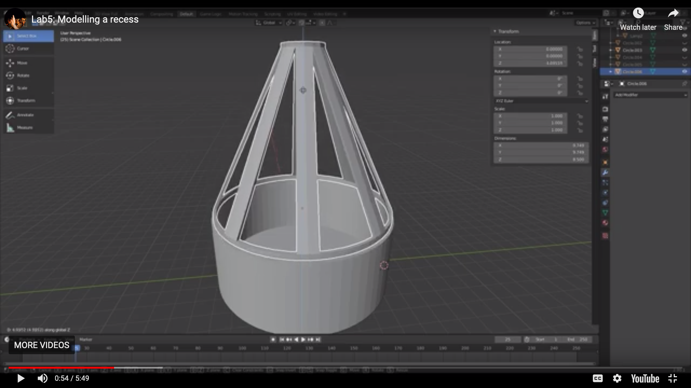
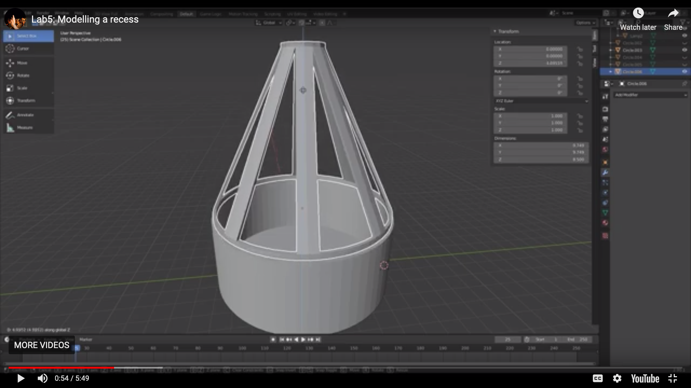
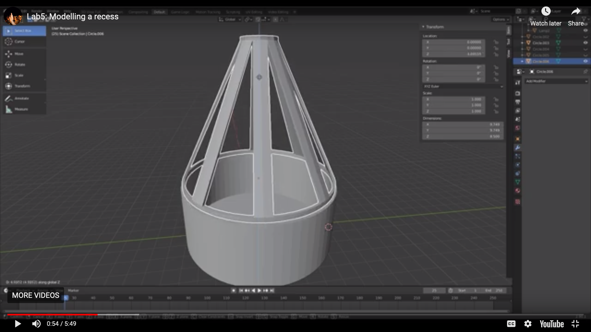

In this lab, you will 3D model the lamp base and lamp shade and then 3D print it on one of our Prusa 3D printers. In the next labs, we will then make the lamp interactive by adding fabric to the lamp that includes touch buttons made from conductive yarn and LEDs to add color changing functionality to the lamp.
can we label in the image 'lamp base' and 'lamp shade'

At the end of the lab, upload to your student google drive:
the 3D models as saved in Blender (.blend file format)
the exported 3D models from Blender (.stl file format)
(1) Install 3D Editor
For 3D modeling, we will use the 3D editor Blender, which is open source.
Blender is available for all major operating systems.
Install the latest version of Blender from here: https://www.blender.org/download/. If you are already familier with a different 3D editor (e.g. Rhino3D, Fusion 360), you can also use it but if you get stuck, we will not be able to help you.
(2) Watch 3D Modeling Getting Started Tutorials
If you are not familiar with Blender, we recommend you watch these getting started tutorials on youtube (number 1-15, each is 3-12 minutes, ca. 75 minutes total): Blender Tutorials.
(3) Short Cuts for 3D Modeling
Here is a summary of the short cuts which may come handy when you do your 3D modeling in the next steps:
Short cuts: 'a' = select all 'e' = extrude 's' = scale 'm' = merge '7' = top view '1' = side view 'G' + 'z' = grab and move in z
(3) 3D Model the Lamp Base
Our lamp consists of two parts: the base of the lamp (the cylindrical shape that will house the electronics), and the shade of the lamp (the cone shape that will be covered with fabric).
We made video tutorials that guide you through the modelling. The video quality might be better if you click on the youtube icon in the lower left corner. This opens a new tab and you can set the quality to 1080p.
Create Cylinder for Housing Electronics: Make a circle (vertices: 64, location: 0,0,0, radius: 5.0cm). Extrude to height 4.0cm. Select all edges on the circle, extrude inwards to close off bottom of cylinder. Increase wallthickness by selecting all edges on top of circle and extrude inwards by 2mm, then extrude downwards to create the walls of the cylinder, extrude inwards to create walls at the bottom.
Add Hole for USB Cable to Cylinder:Where is the video for the hole?
(4) 3D Model the Lamp Shade
The lamp shade will be placed on top of the lamp base. It has holes to let light shine through and it will be the place on which you can mount RGB LEDs. The video quality might be better if you click on the youtube icon in the lower left corner. This opens a new tab and you can set the quality to 1080p.
Adding a recess to the lamp base: The base and the shade of the lamp do not really fit to each other and wouldn't connect tightly when just placed on top of each other. Therefore, add a recess to base of the lamp that has enough space such that the lamp shade fits in it nicely. We will also add a whole for the USB cable to the base of the lamp. The video quality might be better if you click on the youtube icon in the lower left corner. This opens a new tab and you can set the quality to 1080p.
(5) Export .stl File for Each 3D Model
In the next lab, we will slice the 3D model for 3D printing. For this, The 3D models have to be converted from Blender's internal file format (.blend) to another file format that the slicing software can load and process. The standard for saving digital models is .stl and we will use this file format to load models into the slicing software. The video below shows how you can save each of your 3D models as .stl files. The video quality might be better if you click on the youtube icon in the lower left corner. This opens a new tab and you can set the quality to 1080p.
Can we split your youtube videos into shorter segments? e.g. just exporting the stls?
Deliverables
At the end of the lab, upload to your student google drive:
the 3D models as saved in Blender (.blend file format)
the exported 3D models from Blender (.stl file format)


 
